🍽️ Sabor IFS (Aplicação de Restaurante) – Manual Completo para Usuário, Administrador e Desenvolvedor
Versão: 1.5.0 Framework: Django 5.2 Público: Usuários, Administradores, Desenvolvedores Autores: Adriny Safira, Cauan Ugino, Cleiton Matheus, Cristiano Brito, Elton Moraes
📚 Índice Geral
-
- Home
- Menu
- Carrinho
- Checkout
- Pedidos
- Perfil
- Feedback
- Reserva de Mesas
-
- Lista de Entregas
- Detalhes da Entrega
- Atualização de Status
- Atribuição de Entregadores
- Cadastro de Entregadores
-
- Acesso Administrativo
- Gerenciamento de Produtos
- Categorias
- CMS (Gerenciamento de Conteúdo)
- Pedidos
-
- Instalação
- Estrutura do Projeto
- Modelos
- Rotas
- APIs
- Testes
- Debug
- Deploy
1. Introdução
O Sabor IFS (Aplicação de Restaurante) é um sistema moderno e completo para restaurantes com:
🍔 Cardápio dinâmico
🛒 Carrinho inteligente
💳 Finalização de pedidos
📦 Rastreamento de entregas
🚴♂️ Sistema de entregadores
📱 Painel do cliente
🛠 Painel administrativo
📅 Reserva de mesas
Envio de feedback
O sistema foi expandido para incluir gestão logística completa, permitindo:
- cadastro de entregadores
- controle de entregas
- atualização de status
- atribuição manual de entregadores
- detalhes completos das entregas
- notas e rastreamento
2. Estrutura da Aplicação
A aplicação possui três níveis de acesso:
🔓 Páginas Públicas
Qualquer usuário pode acessar:
- Home
- Menu
- Sobre
- Feedback
- Reservas
- Contato
- Login / Cadastro
🔐 Páginas do Usuário Autenticado
Usuário logado pode acessar:
- Carrinho
- Checkout
- Meus Pedidos
- Perfil
- Logout
🛠 Páginas Administrativas
Requer:
user.is_staff = True
Inclui:
- Dashboard
- Pedidos
- Itens do cardápio
- Feedback
- Reservas
- Gestão logística
- Entregadores
- Entregas e status
3. GUIA DO USUÁRIO
Aprenda a navegar pelo site.
Este guia foi elaborado para usuários iniciantes que estão acessando a plataforma pela primeira vez. Aqui você encontrará explicações passo a passo de como navegar pelas páginas, onde clicar e o que esperar em cada tela.
Sempre que uma página exigir login, isso será indicado claramente.
📍 3.1 – Home
A Home é a primeira página exibida ao acessar o site. Ela funciona como a vitrine principal do restaurante e apresenta as informações iniciais para o visitante.
Para acessar a Home, basta abrir o site no navegador. Não é necessário estar logado.
Nesta página você encontrará:
- Um banner principal com destaque do restaurante
- Informações institucionais
- Pratos em destaque
- Depoimentos de clientes
- Botões de acesso rápido para Menu, Login e Cadastro
💡 Dica: A Home é o ponto de partida para todas as outras funcionalidades da aplicação.

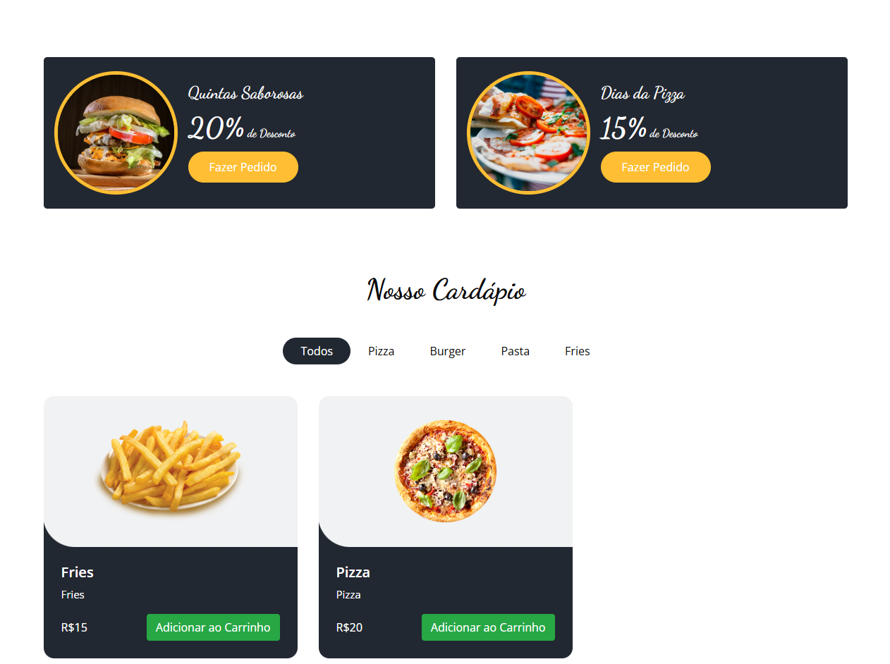
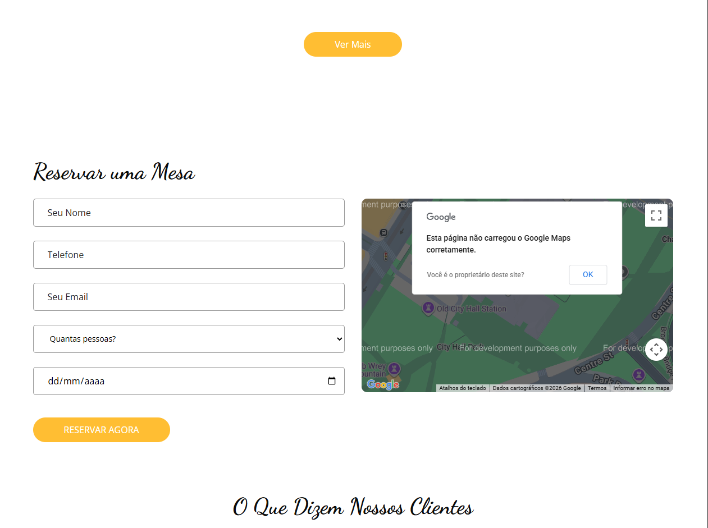
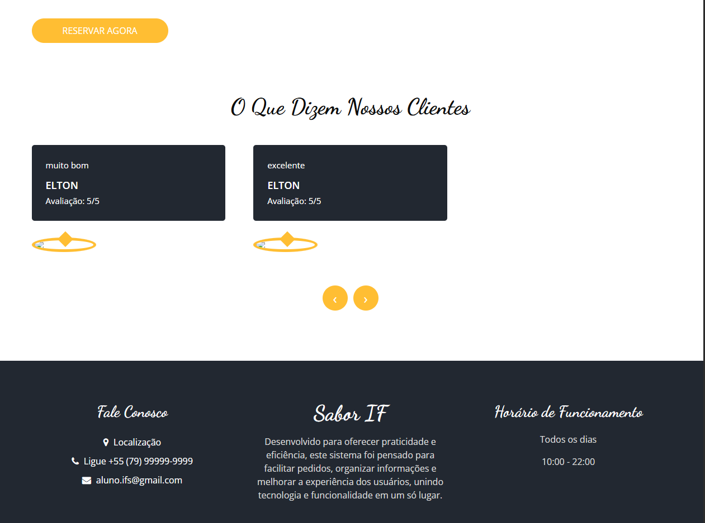
📍 3.2 – Entrar
A página Entrar permite que usuários já cadastrados acessem suas contas.
Para acessar esta página:
- Clique no botão Entrar no menu superior do site
- Você será direcionado para o formulário de login
No formulário, informe:
- Seu e-mail cadastrado
- Sua senha
Após clicar em Entrar, o sistema irá autenticar o usuário e liberar o acesso às funcionalidades como carrinho, pedidos e perfil.
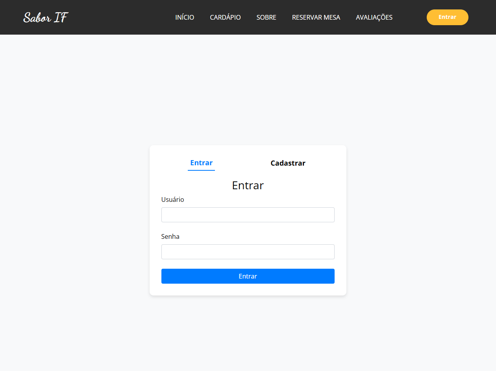
📍 3.3 – Cadastrar
A página Cadastrar é destinada a novos usuários que ainda não possuem uma conta na plataforma.
Para acessar:
- Clique em Cadastrar no menu superior
- Preencha o formulário com seus dados pessoais
Após o cadastro:
- O usuário já pode realizar login
- Adicionar itens ao carrinho
- Finalizar pedidos
⚠️ É necessário informar dados válidos para garantir o correto funcionamento do sistema.
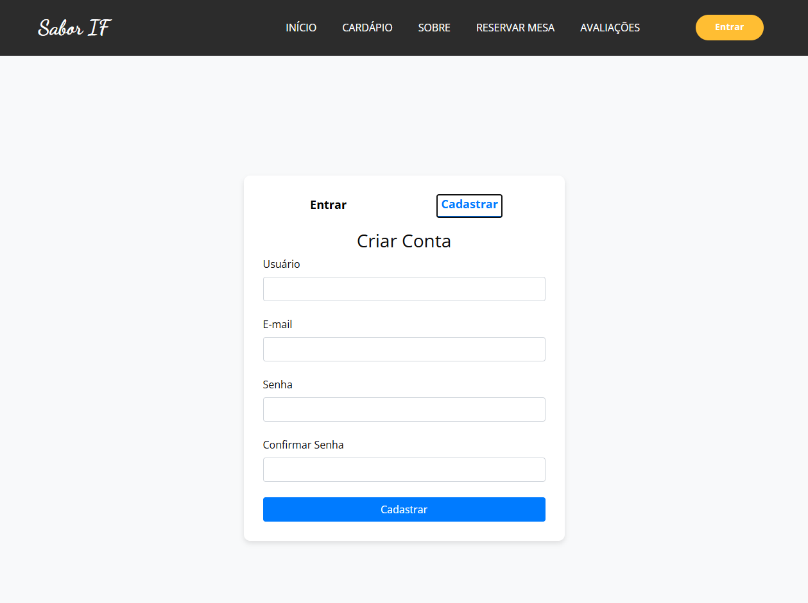
📍 3.4 – Menu
A página Menu apresenta o cardápio completo do restaurante. Ela pode ser acessada por qualquer visitante, mesmo sem login.
Para acessar o Menu:
- Clique em Menu no menu principal
Cada item do cardápio exibe:
- Imagem do prato
- Nome
- Descrição
- Preço
- Botão Adicionar ao Carrinho
⚠️ Para adicionar itens ao carrinho, é necessário estar logado. Caso contrário, o sistema solicitará o login.
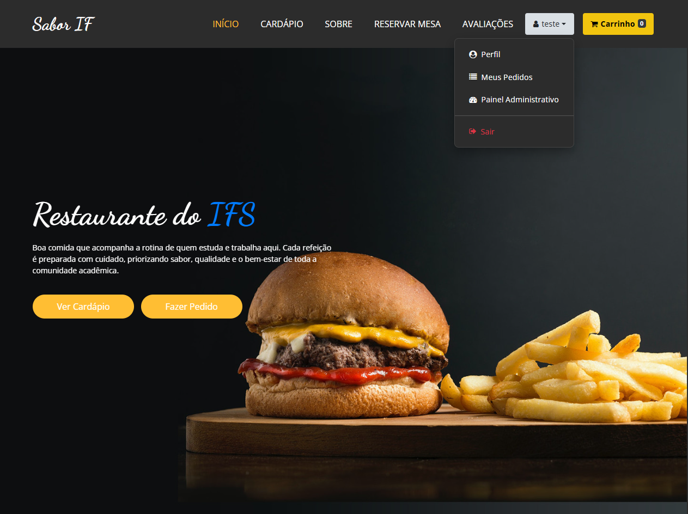
Como usar:
- Role pela lista de pratos
- Clique em Adicionar ao Carrinho
- Recebe feedback visual de confirmação
🛒 3.5 – Carrinho
O Carrinho reúne todos os produtos selecionados pelo usuário antes da finalização do pedido.
Para acessar o carrinho:
- Estar logado na plataforma
- Clicar no ícone do carrinho no topo da página
Nesta página o usuário pode:
- Aumentar ou diminuir a quantidade de cada item
- Remover produtos
- Visualizar o valor total do pedido
- Avançar para o checkout
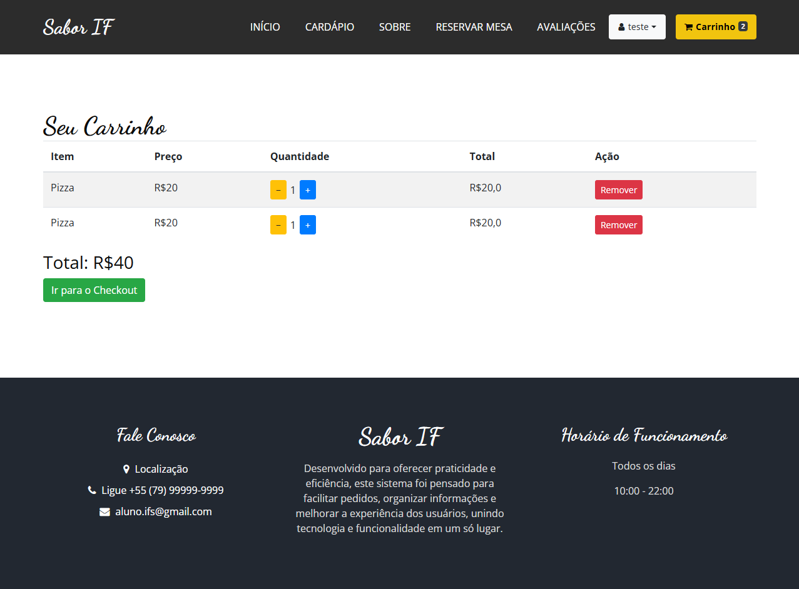
Funções:
- ➕ aumentar quantidade
- ➖ diminuir quantidade
- ❌ remover item
- ✔ seguir para o checkout
💳 3.6 – Checkout
A página de Checkout é utilizada para confirmar e finalizar o pedido.
Para acessar:
- Adicionar produtos ao carrinho
- Clicar em Finalizar Pedido no carrinho
O checkout apresenta:
- Resumo completo do pedido
- Itens e quantidades
- Valor total
Após a confirmação, o pedido é registrado no sistema e o usuário é redirecionado para o resumo.
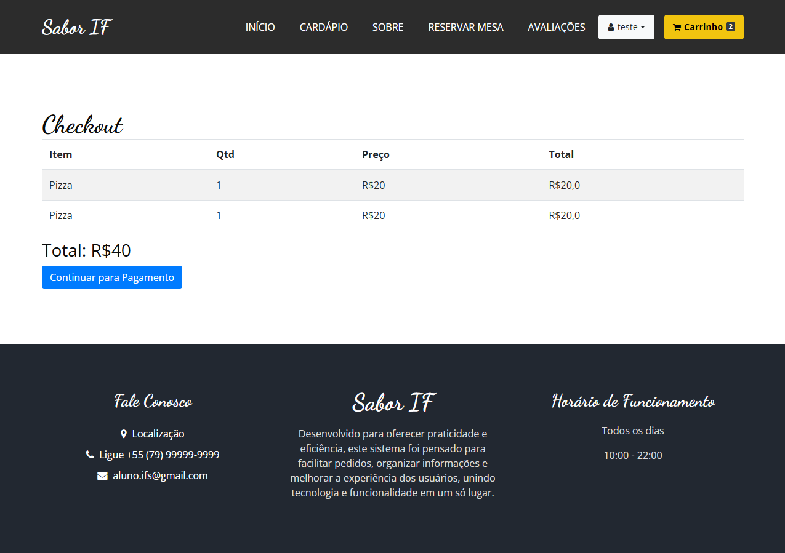
Ao finalizar:
- cria
Order - cria
OrderItem - limpa carrinho
- redireciona para o resumo
📦 3.7 – Resumo do Pedido
A tela de Resumo do Pedido apresenta todas as informações essenciais relacionadas a uma compra realizada pelo usuário. Esse resumo permite acompanhar o pedido de forma clara e transparente, desde a confirmação até a entrega.
Nesta seção, são exibidos os seguintes dados:
- ID do Pedido: Identificador único para referência e acompanhamento
- Data: Data e horário em que o pedido foi realizado
- Itens: Lista dos produtos incluídos no pedido, com quantidades
- Total: Valor final da compra
- Status: Situação atual do pedido (pendente, em preparo, em rota, entregue, etc.)
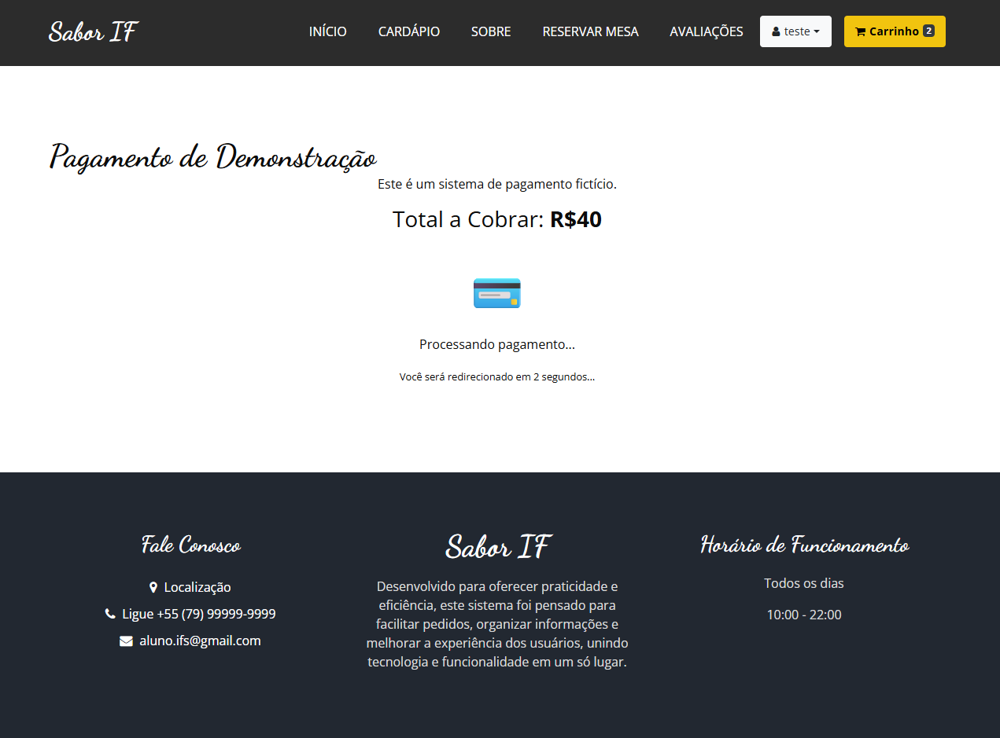
📑 3.8 – Meus Pedidos
A página Meus Pedidos exibe o histórico de todos os pedidos realizados pelo usuário.
Para acessar:
- Estar logado
- Clicar em Meus Pedidos no menu do usuário
Aqui o usuário pode acompanhar:
- Status do pedido
- Data da compra
- Itens adquiridos
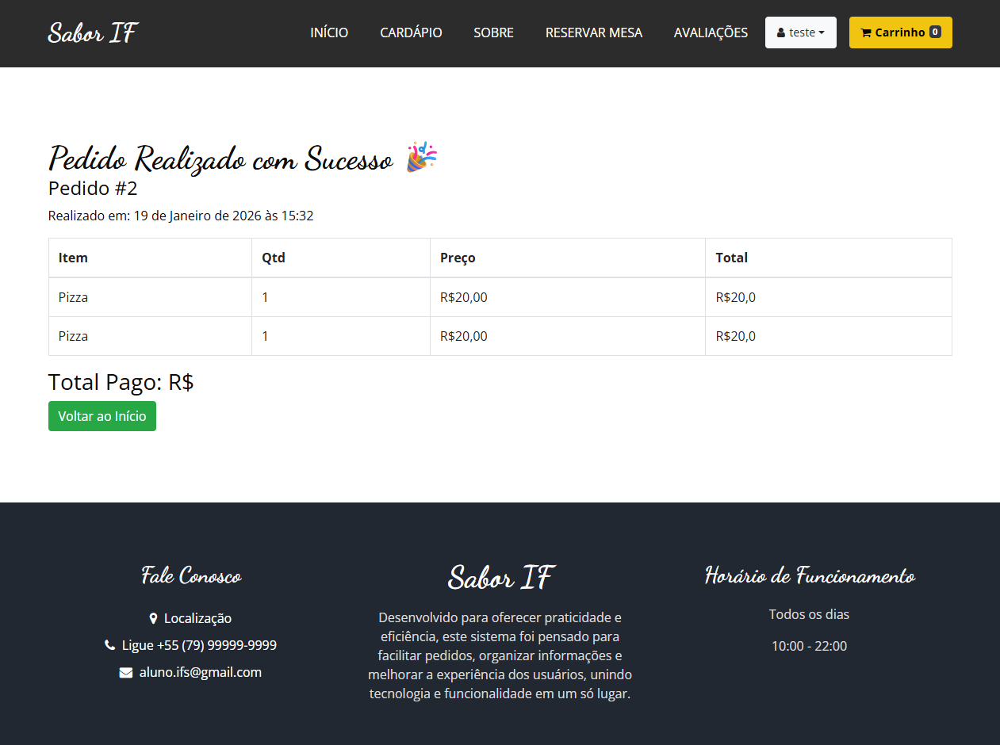
👤 3.9 – Perfil do Usuário
A página Perfil do Usuário concentra as informações pessoais do usuário cadastrado no sistema.
Para acessar o perfil:
- O usuário deve estar logado
- Clicar no menu do usuário (geralmente no topo da página)
- Selecionar a opção Perfil
Nesta página, o usuário pode:
- Visualizar seus dados pessoais
- Confirmar informações cadastradas
- Acessar rapidamente seus pedidos
💡 Dica: Manter os dados atualizados ajuda no contato e na organização dos pedidos.
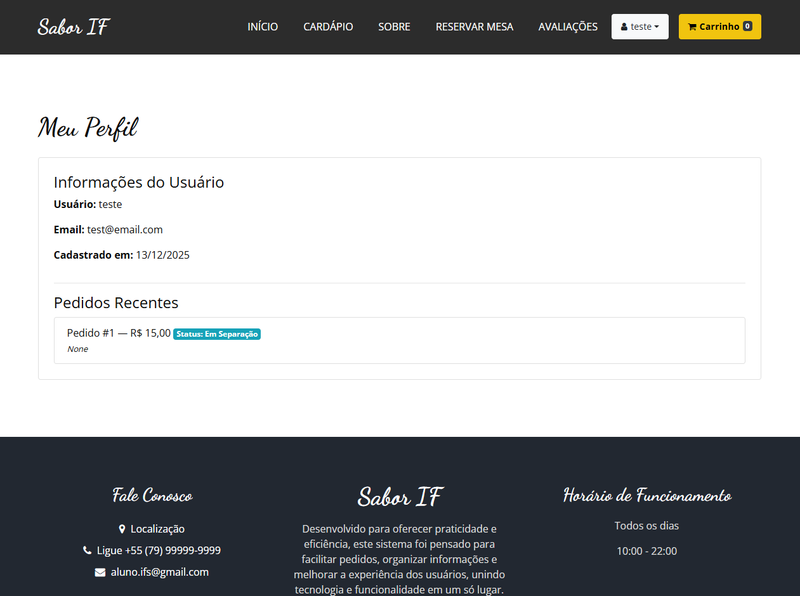
3.10 – Feedback
A página de Feedback permite que os usuários avaliem a experiência com o restaurante.
Para acessar:
- Acessar a opção Feedback no menu
O formulário de feedback contém:
- Nome do usuário
- Comentário ou descrição da experiência
- Nota de avaliação
- Imagem opcional
Após o envio:
- A avaliação é salva no sistema
- Pode ser exibida na página inicial
- Auxilia na melhoria contínua do serviço
⚠️ Recomenda-se utilizar linguagem respeitosa ao enviar avaliações.
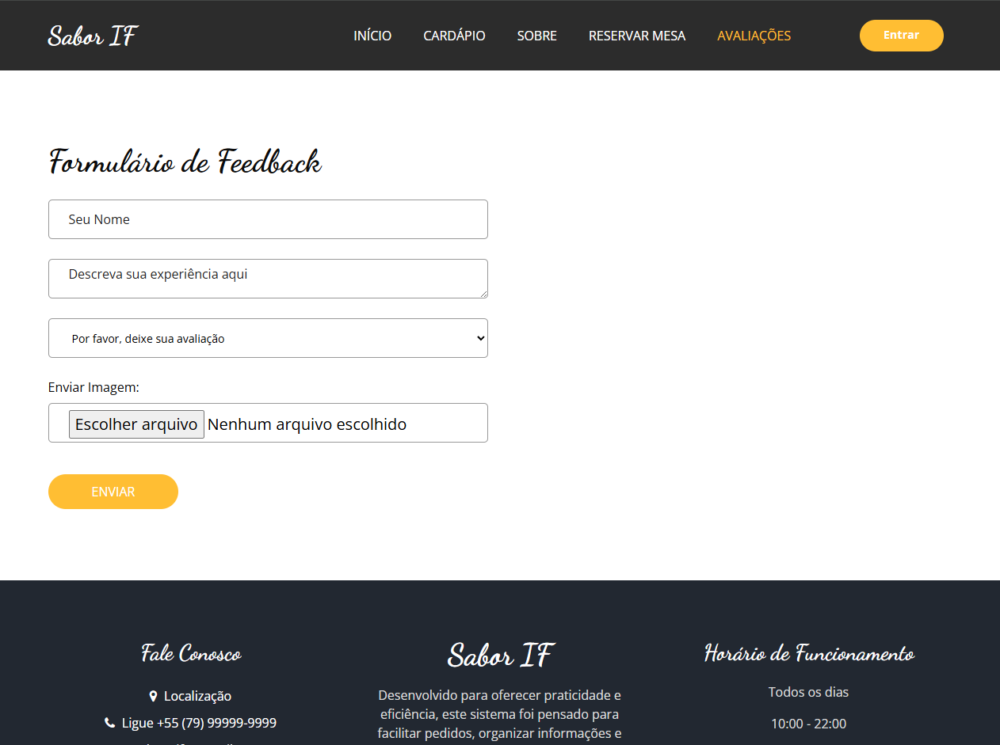
🍽 3.11 – Reservas
A página de Reservas permite que clientes agendem uma mesa no restaurante de forma prática.
Para acessar:
- Clicar em Reservar Mesa no menu
O formulário de reserva solicita:
- Nome completo
- Telefone para contato
- Quantidade de pessoas
- Data da reserva
Após o envio do formulário:
- A reserva é registrada no sistema
- A equipe do restaurante pode se organizar antecipadamente
💡 Dica: Informe dados corretos para facilitar o contato em caso de necessidade.
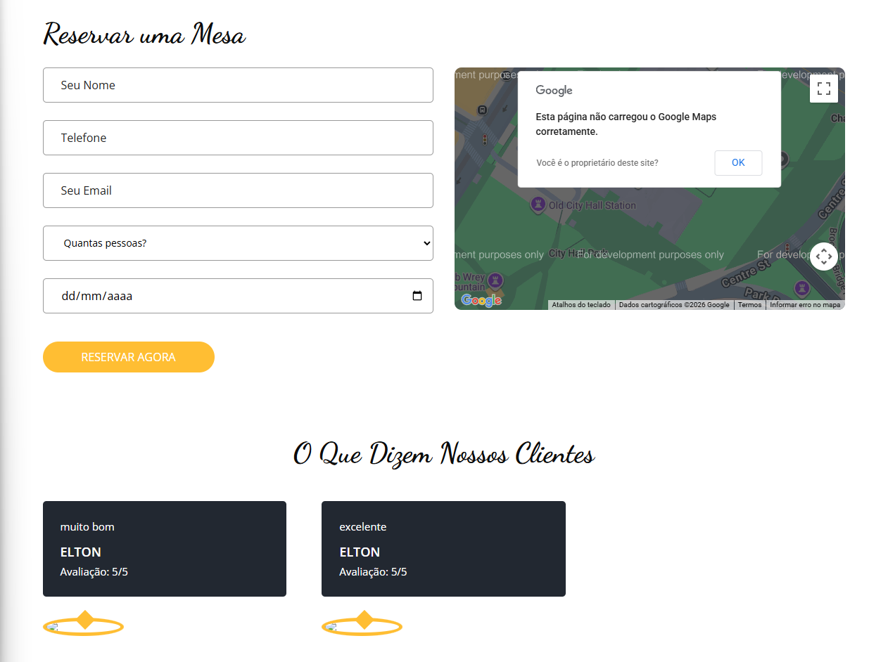
4. GUIA DE LOGÍSTICA
Grande novidade do sistema.
🚚 4.1 – Lista de Entregas
O módulo de Logística é responsável por gerenciar o processo de entrega dos pedidos realizados pelos clientes.
Ele permite acompanhar cada pedido desde a confirmação até a entrega final.
URL:
/dashboard/deliveries/
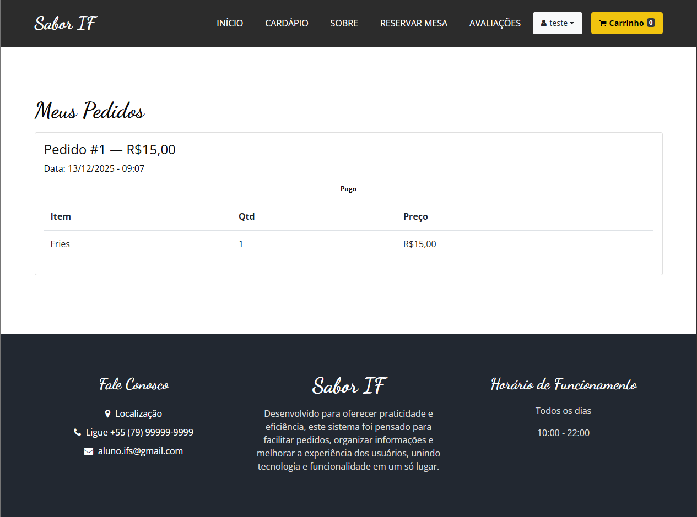
- número do pedido
- status atual
- entregador responsável
- botão "Detalhes"
Funções:
- visualizar todas as entregas
- acessar cada pedido individual
📄 4.2 – Detalhes da Entrega
A página Lista de Entregas apresenta todos os pedidos que possuem entrega associada.
Para acessar:
- Acessar o painel administrativo
- Clicar em Entregas
Nesta tela é possível visualizar:
- Número do pedido
- Status da entrega
- Data de atualização
URL:
/dashboard/delivery/<id>/
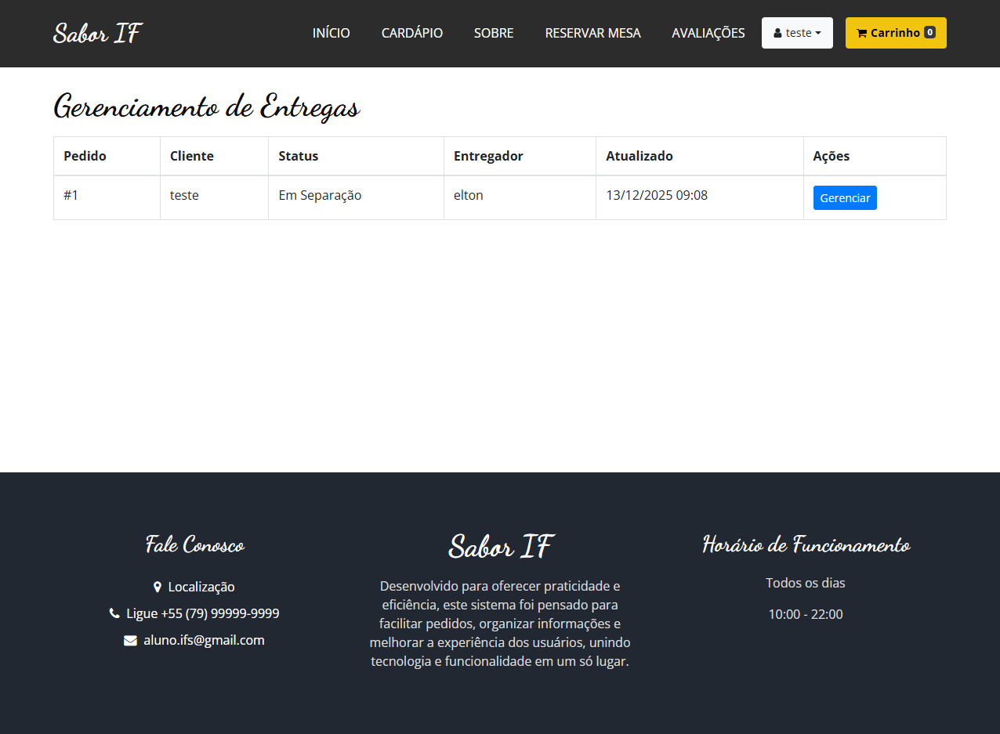
- dados do pedido
- status
- histórico
- notas
- entregador atual
Permite ações:
- alterar status
- adicionar notas
- atribuir entregador
🔄 4.3 – Atualizar Status da Entrega
Cada entrega possui um status que indica sua situação atual.
Status possíveis:
- Pendente
- Em separação
- Em rota
- Entregue
- Cancelado
O status pode ser atualizado conforme o andamento do pedido, mantendo o controle e a transparência.
URL POST:
/dashboard/delivery/<id>/update/
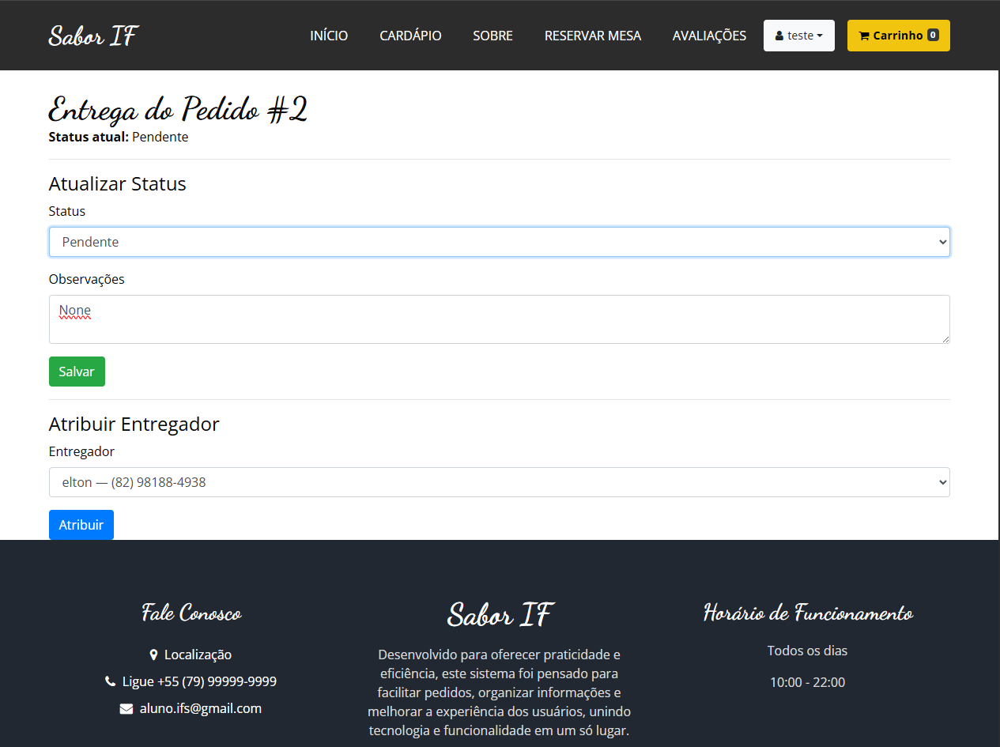
- pendente
- em rota
- entregue
- cancelado
A página contém:
- dropdown de status
- textarea para notas
- botão salvar
🧍♂️ 4.4 – Atribuir Entregador
URL POST:
/dashboard/delivery/<id>/assign/
- nenhum entregador
- algum entregador cadastrado
Define o responsável pela entrega.
👷♂️ 4.5 – Cadastro de Entregadores
URL:
/dashboard/delivery-person/
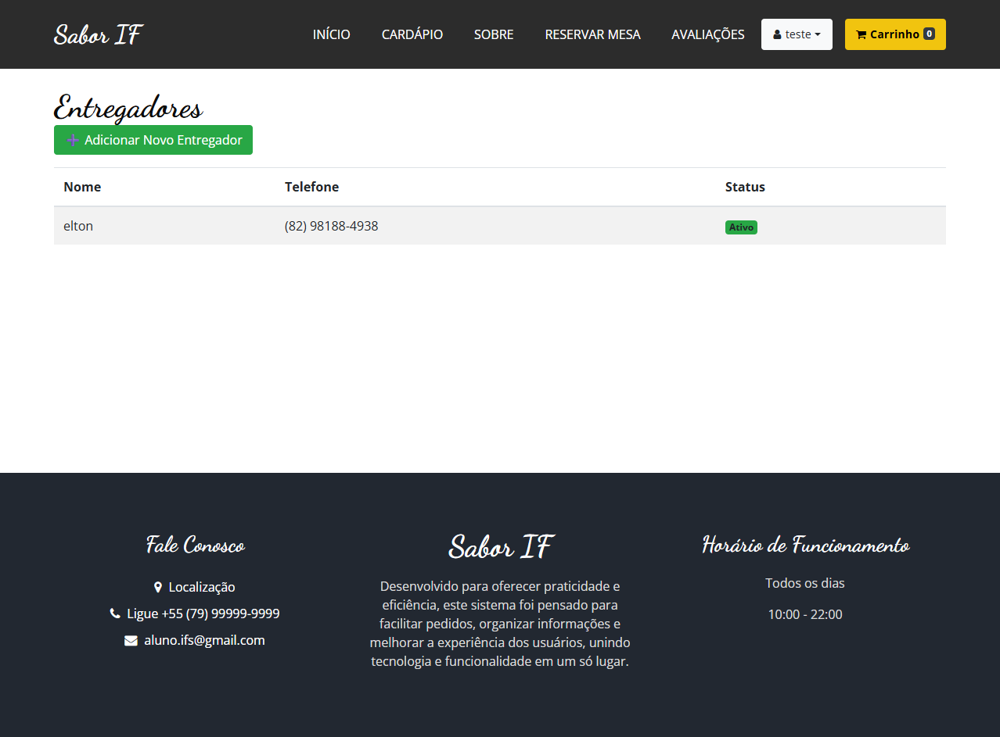
URL para adicionar:/dashboard/delivery-person/add/
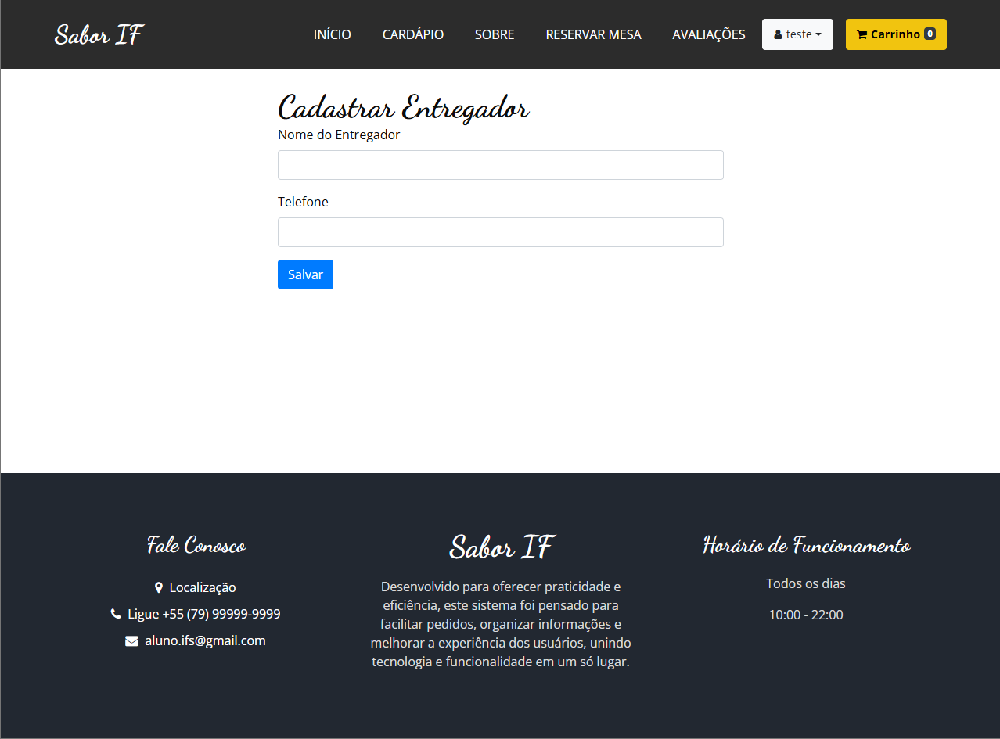
Campos:
- nome
- telefone
5. GUIA DO ADMINISTRADOR
Painel administrativo completo.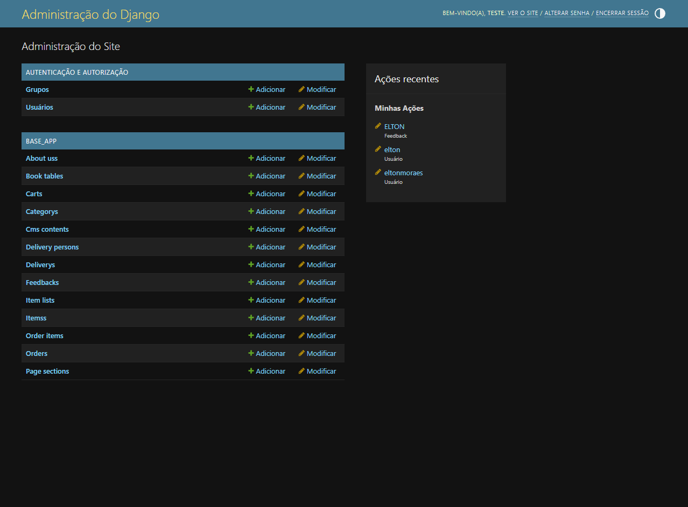
🔐 5.1 – Acesso Administrativo
O painel administrativo é destinado apenas a usuários com permissões de administrador ou equipe.
Para acessar:
- Realizar login com uma conta administrativa
- Acessar o menu Painel Administrativo
🍽️ 5.2 – Gerenciamento de Produtos
O administrador pode gerenciar todos os produtos do cardápio.
Funcionalidades disponíveis:
- Adicionar novos produtos
- Editar produtos existentes
- Alterar preços, categorias e imagens
Existe também a opção de edição em massa (bulk), permitindo atualizar vários produtos de forma rápida.
📂 5.3 – Categorias
As categorias organizam os produtos do cardápio.
O administrador pode:
- Criar novas categorias
- Editar categorias existentes
🧩 5.4 – CMS (Gerenciamento de Conteúdo)
O módulo CMS permite editar conteúdos textuais e visuais das páginas do site sem necessidade de programação.
É possível gerenciar conteúdos das páginas:
- Home
- Sobre
- Menu
- Rodapé
- Contato
📦 5.5 – Pedidos
O administrador pode acompanhar todos os pedidos realizados no sistema.
Nesta seção é possível:
- Visualizar pedidos
- Confirmar pagamentos
- Integrar com a logística
🧠 5.6 – Boas Práticas Administrativas
- Manter produtos e preços atualizados
- Acompanhar feedbacks dos clientes
- Atualizar status das entregas corretamente
- Organizar categorias de forma clara
6. GUIA DO DESENVOLVEDOR
🛠 6.1 – Instalação
git clone https://github.com/eltonmoraes6/restaurant-django-app.git
cd restaurant-django-app
Crie o ambiente virtual:
python -m venv venv
venv\Scripts\activate # Windows
source venv/bin/activate # Linux/Mac
Instale as dependências:
pip install -r requirements.txt
Execute as migrações:
python manage.py makemigrations
python manage.py migrate
Crie o usuário administrador:
python manage.py createsuperuser
Inicie o servidor:
python manage.py runserver
Acesse:
App: http://127.0.0.1:8000/
Admin: http://127.0.0.1:8000/admin/
🧱 6.2 – Estrutura do Projeto
restaurant-django-app/
│
├── Base_App/
│ ├── models.py
│ ├── views.py
│ ├── urls.py
│ ├── forms.py
│ ├── templates/
│ │ ├── cms/
│ │ ├── categories/
│ │ ├── delivery/
│ │ └── admin/
│ ├── static/
│
├── Resturant_Project/
│ ├── settings.py
│ ├── urls.py
│
├── media/
├── static/
├── init_cms.py
├── requirements.txt
└── README.md
🧩 6.3 – Modelos
Principais:
- Category – categorias do cardápio
- Items – produtos
- Cart – carrinho temporário
- Order – pedido
- OrderItem – itens do pedido
- BookTable – reserva de mesa
- Feedback – avaliações
- Delivery – logística da entrega
- DeliveryPerson – entregadores
- CMSContent / PageSection – conteúdo dinâmico do site
🧭 6.4 – Rotas
Carrinho
| URL | View |
|---|---|
/add-to-cart/ |
add_to_cart |
/cart/ |
CartPageView |
/increase/<id>/ |
increase_quantity |
/decrease/<id>/ |
decrease_quantity |
🚚 Logística / Entregas
| URL | View |
|---|---|
/dashboard/deliveries/
|
delivery_list |
/dashboard/delivery/<id>/
|
delivery_detail |
/dashboard/delivery/<id>/update/
|
delivery_update |
/dashboard/delivery/<id>/assign/
|
delivery_assign |
/dashboard/delivery-person/
|
delivery_person_list |
/dashboard/delivery-person/add/
|
delivery_person_create |
🧩 CMS (Gerenciamento de Conteúdo)
| URL | View |
|---|---|
/cms/ |
Lista de seções |
/cms/create/ |
Criar nova seção |
/cms/edit/<id>/ |
Editar conteúdo |
📝 6.5 – CMS (Como Funciona)
O CMS (Sistema de Gerenciamento de Conteúdo) permite editar textos, títulos e imagens do site de forma simples e intuitiva, sem a necessidade de alterar o código-fonte. Dessa forma, o administrador pode manter o conteúdo sempre atualizado, garantindo agilidade, organização e autonomia na gestão do site.


📌 Páginas suportadas:
- Home
- About
- Menu
- Footer
- Contact
Cada página pode conter múltiplas seções, como:
- Hero
- Texto institucional
- Rodapé
- Informações de contato
➕ Criar Conteúdo Manualmente (Painel)
-
Acesse:
/cms/ -
Clique em Adicionar Nova Seção
-
Escolha:
- Página (home, about, footer…)
- Seção (ex: hero, description, footer_about)
-
Preencha título, conteúdo e imagem
-
Salve
O conteúdo passa a aparecer automaticamente no site.
⚙️ 6.6 – Inicialização Automática do CMS (Seed)
Para criar conteúdo inicial automaticamente, use o script init_cms.py.
Exemplo de conteúdo padrão:
defaults = [
("about", "title", "We Are Feane"),
("about", "description", "We began our journey in 1990..."),
]
Executar o seed:
python manage.py shell < init_cms.py
✔ Ideal para ambientes novos ✔ Evita banco vazio ✔ Facilita deploy e testes
🌐 6.7 – API (Exemplo)
Resposta ao adicionar item no carrinho:
{
"message": "Item adicionado com sucesso",
"quantity": 1
}
🧪 6.8 – Testes
python manage.py test
🐞 6.9 – Debug Comum
| Erro | Solução |
|---|---|
| NoReverseMatch | Verificar nome da rota |
| TemplateDoesNotExist | Caminho do template |
| ImportError | Caminho incorreto |
| 404 | URL não registrada |
🚀 6.10 – Deploy (Produção)
pip install gunicorn whitenoise
Adicione:
"whitenoise.middleware.WhiteNoiseMiddleware",
Execute:
gunicorn Resturant_Project.wsgi
7. IMAGENS
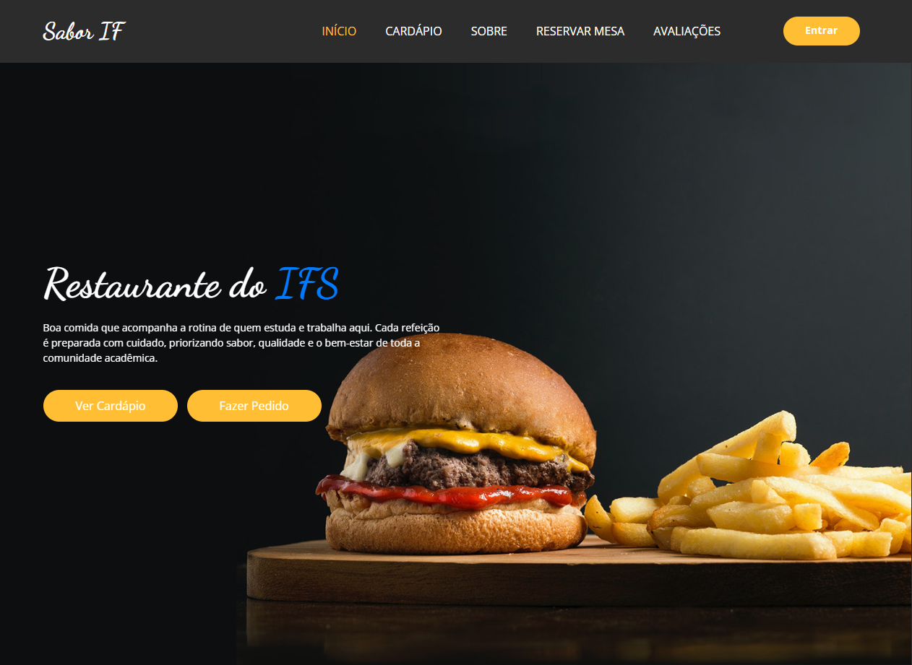
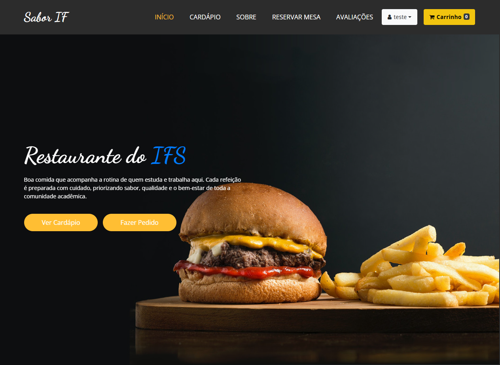
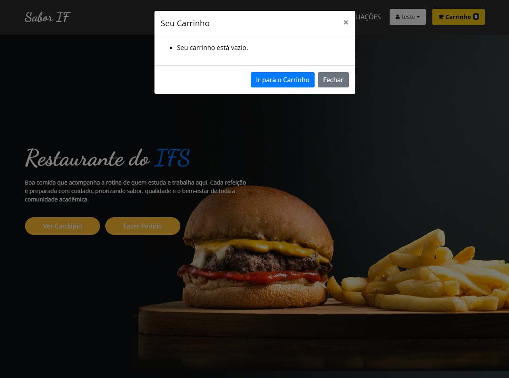
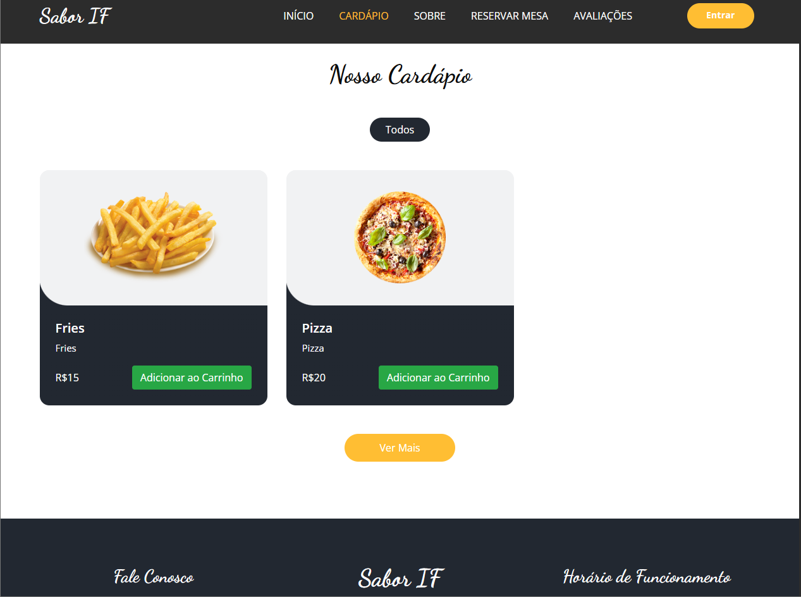

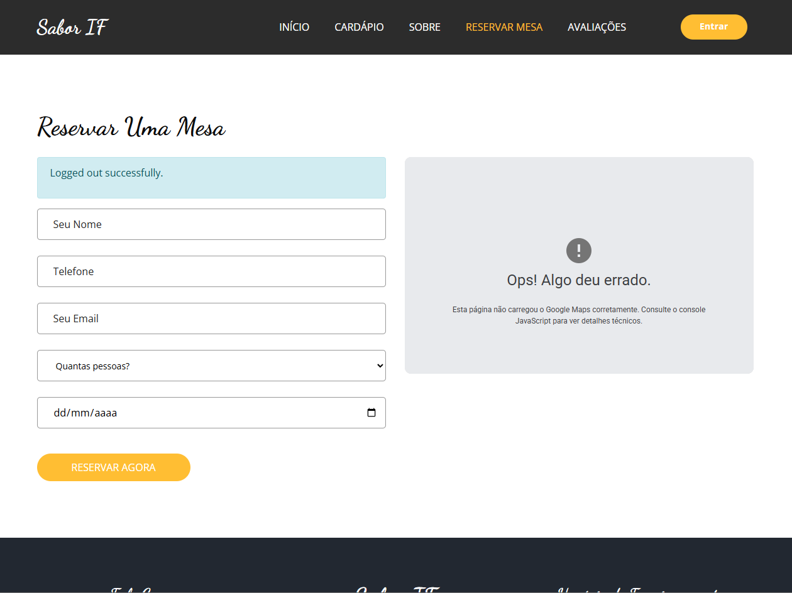
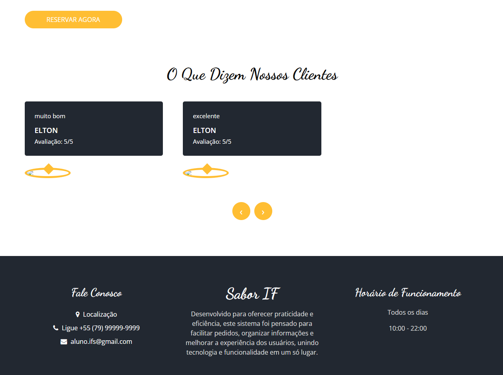
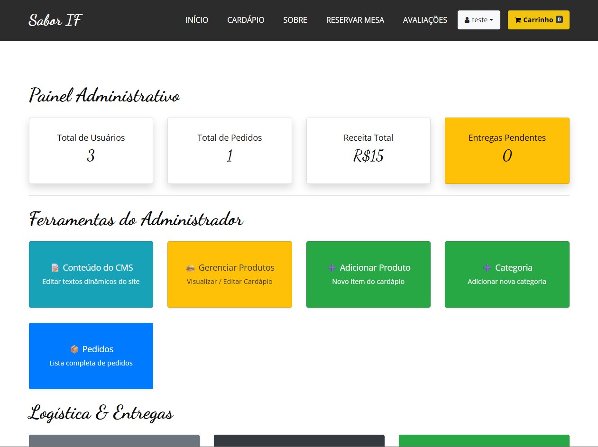
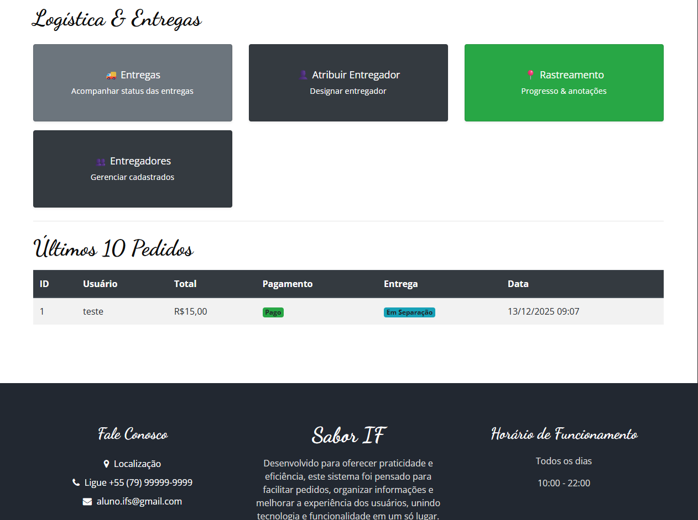
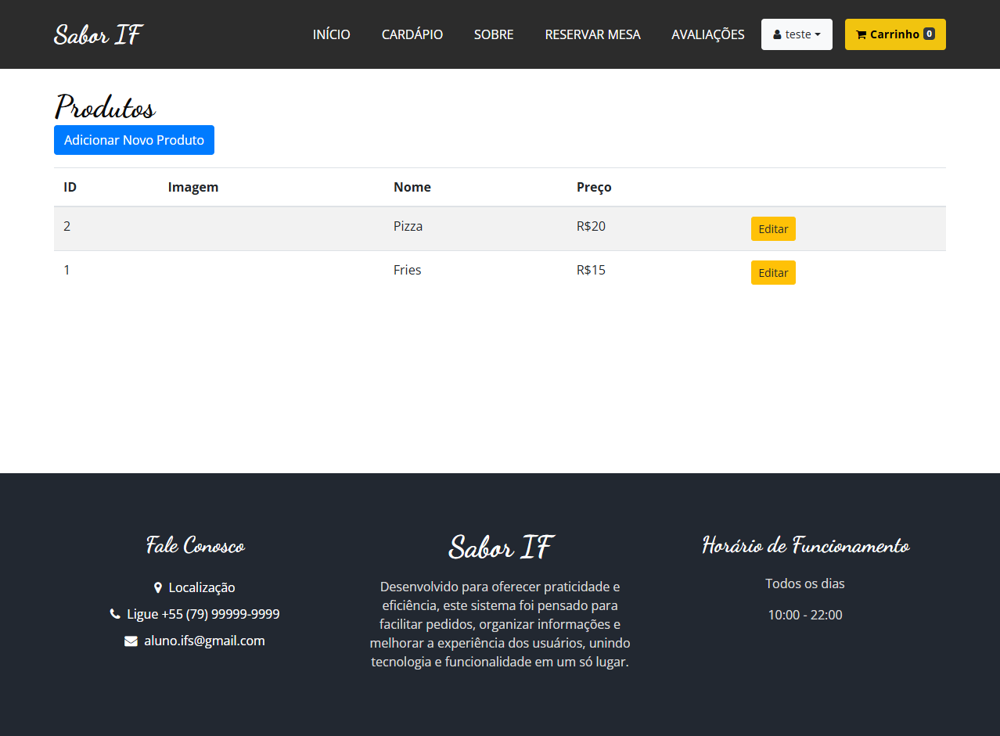
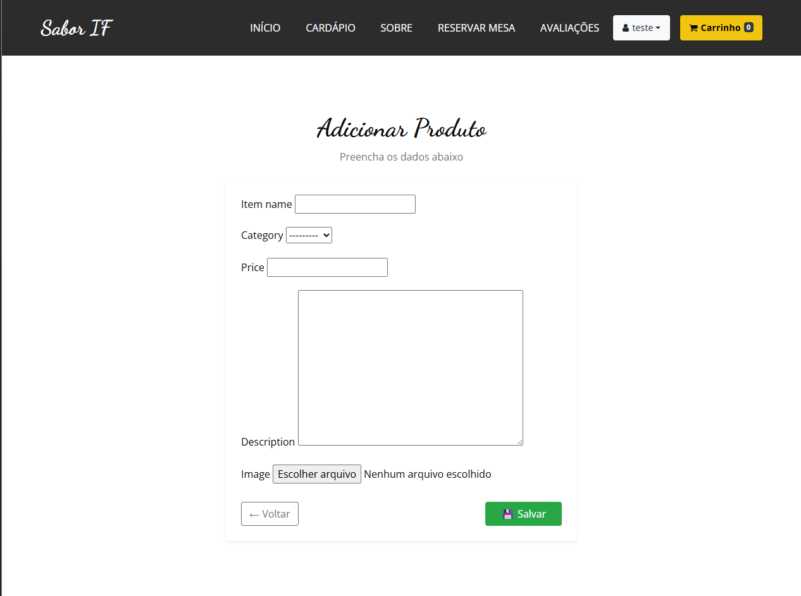
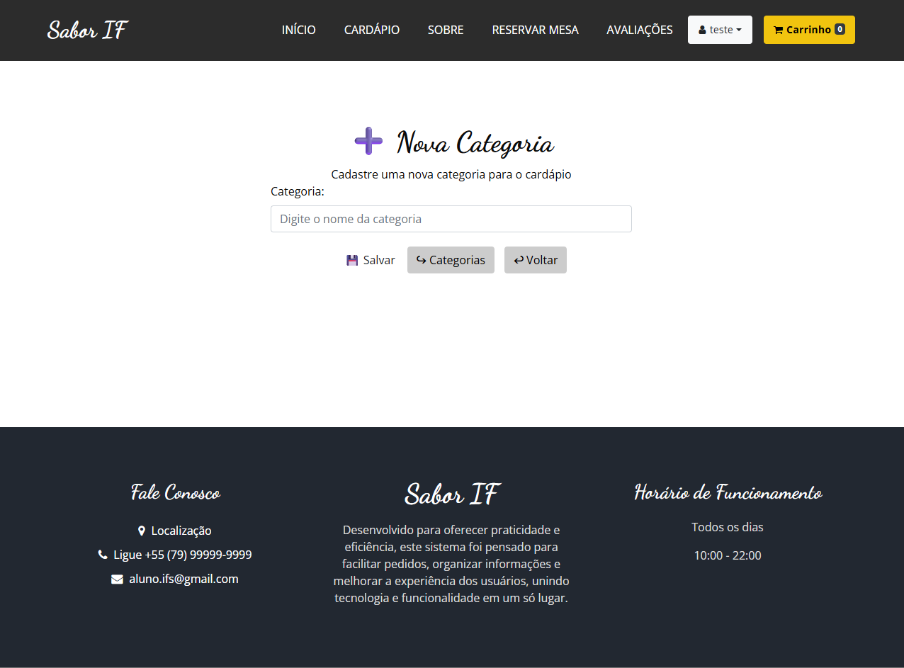
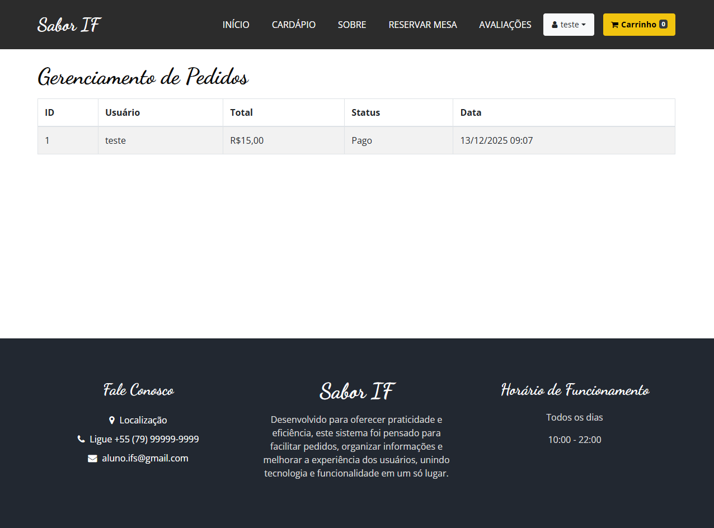
8. CONCLUSÃO
O Sabor IFS foi desenvolvido com o objetivo de oferecer uma solução completa e integrada para a gestão de restaurantes, unindo praticidade, organização e eficiência em um único sistema. Ao longo deste manual, foram apresentados os principais recursos da aplicação, contemplando as necessidades de usuários, administradores e desenvolvedores, de forma clara e estruturada.
Para o usuário final, a aplicação disponibiliza funcionalidades essenciais como visualização do cardápio, gerenciamento do carrinho, finalização de pedidos, acompanhamento do histórico, envio de feedbacks e realização de reservas de mesas, proporcionando uma experiência intuitiva e acessível. Já para o administrador, o sistema oferece um painel robusto para controle de produtos, categorias, pedidos, avaliações, reservas e logística, incluindo o gerenciamento de entregas e entregadores, garantindo maior organização e controle operacional.
Do ponto de vista técnico, o projeto foi construído utilizando o framework Django 5.2, seguindo boas práticas de desenvolvimento, com uma arquitetura modular, controle de acesso por níveis de permissão e integração de um CMS, que permite a atualização dinâmica de conteúdos sem a necessidade de alterações diretas no código. O guia do desenvolvedor fornece orientações completas para instalação, manutenção, testes e deploy, facilitando a continuidade e evolução do sistema.
Dessa forma, o Sabor IFS apresenta-se como uma aplicação estável, escalável e preparada para uso em ambientes reais, além de servir como uma base sólida para futuras melhorias e expansões. Este manual tem como finalidade apoiar o uso correto da plataforma e contribuir para a sua manutenção e desenvolvimento contínuo.